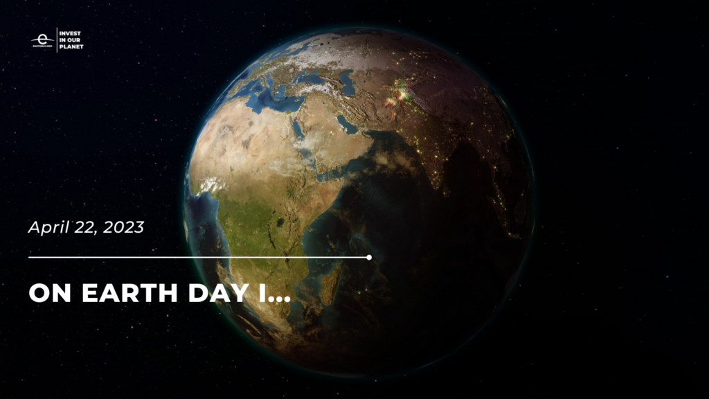
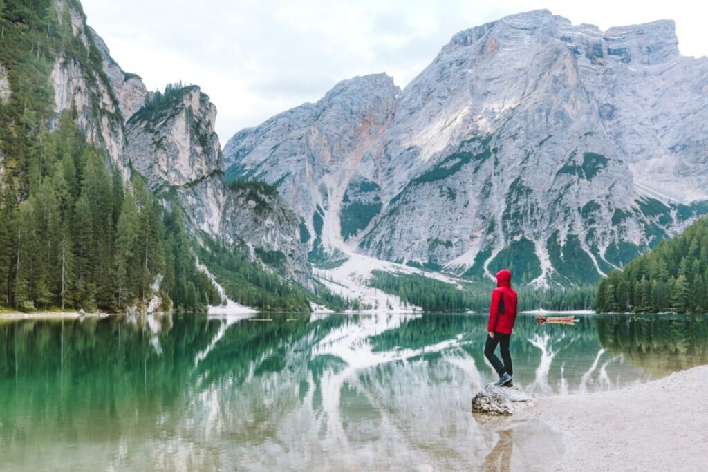

<div class="gallery">
  
  
  
  

  
   
    
     
      
       
        
         
          
       
        
         
          
           
            
 


</div>
<style>.gallery {
  display: flex;
  flex-wrap: wrap;
  justify-content: center;
}

.gallery img {
  width: 200px;
  height: 150px;
  margin: 10px;
  object-fit: cover;
  cursor: pointer;
}

.modal {
  display: none;
  position: fixed;
  z-index: 1;
  top: 0;
  left: 0;
  width: 100%;
  height: 100%;
  overflow: auto;
  background-color: rgba(0, 0, 0, 0.9);
}

.modal-content {
  display: block;
  margin: 50px auto;
  max-width: 800px;
}

.modal img {
  width: 100%;
  height: auto;
}

.close {
  color: white;
  font-size: 30px;
  font-weight: bold;
  position: absolute;
  top: 10px;
  right: 20px;
  cursor: pointer;
}
</style>
<script>// Get the modal element
var modal = document.querySelector(".modal");

// Get the images and create an array
var images = Array.from(document.querySelectorAll(".gallery img"));

// Loop through each image and add a click event listener
images.forEach(function(image) {
  image.addEventListener("click", function() {
    // Set the source of the modal image to the clicked image
    var modalImg = modal.querySelector("img");
    modalImg.src = this.src;

    // Display the modal
    modal.style.display = "block";
  });
});

// Get the close button and add a click event listener
var closeButton = document.querySelector(".close");
closeButton.addEventListener("click", function() {
  // Hide the modal
  modal.style.display = "none";
});
</script>


<a href="HyperlinkSublime2.html" target="_blank" title="Search Engine's">Yoo Check this Out! </a> 